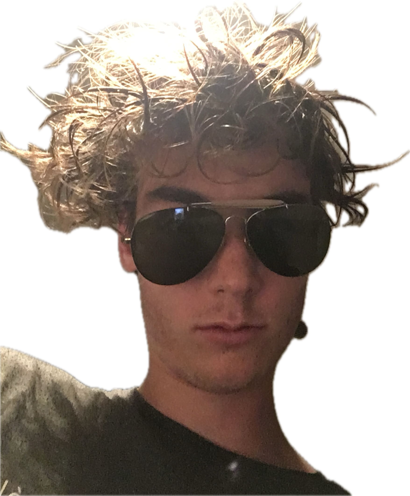
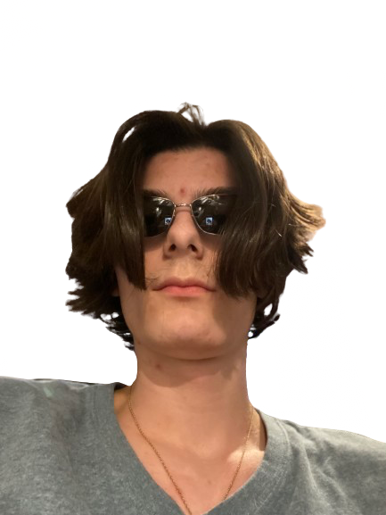

Les Barbapapa

Barbapapa:
Comme une fleur, Barbapapa est né dans un jardin.
Il peut prendre n’importe quelle forme. Il est très gentil et tout le monde l’aime bien sauf Baprien qui le trouve un peu faux
Non loin du village où habitent ses amis Claudine et François il a construit pour sa famille une maison qui lui ressemble.
Grâce à quelques transformations et une brillante imagination, il vient à bout des situations les plus difficiles…et le tout en douceur !
Il est toujours prêt à rendre service, sa bonne volonté est inépuisable.

Barbamama:
Barbamama est la compagne de Barbapapa.
Elle aime faire la cuisine à leurs 7 enfants. Elle aime s’occuper de sa maison et de son jardin.
Mais attention…elle peut aussi construire des charpentes, réparer les barrages et détourner la lave des volcans !
Barbamama ne craint pas l’action !

Barbidou:
Barbidou aime et protège la nature et les animaux.
Il est très fort en sciences naturelles. il sait tout sur la faune et la flore, le climat et la pollution.
Barbidou se méfie beaucoup des expériences sur la génétique de Barbibul. Il a souvent raison de se méfier…

Barbabelle:
Barbabelle est très coquette.
Elle aime les bijoux, les robes et les parfums. Elle passe beaucoup de temps à se maquiller.
Elle a très peur des petites bêtes poilues comme les chenilles ou les araignées. D’ailleurs, elle s‘évanouit quand elle en voit une ! Barbouille trouve ça très énervant.

Barbidur:
Barbidur est un grand sportif.
Il est très fort et il aime gagner. Il aime aussi commander. Il aime tout cequi se mange.
Avec sa panoplie de Sherlock Holmes (le chapeau et la loupe) et l‘aide de sa fidèle Lolita, il joue au grand détective.
Barbidur est un peu trop content de lui, mais c‘est un brave type.

Barbotine:
Barbotine est une intellectuelle et une militante.
Elle est toujours plongée dans les livres et sait beaucoup de choses. Elle aime jouer à la maîtresse.
Elle n’a pas très bon caractère et se dispute souvent avec Barbidur car elle aussi veut être le chef.

Barbibul:
Barbibul est un grand savant.
La chimie, l‘astrophysique, la génétique, rien n‘a de secret pour lui.
Potions inquiétantes, machines farfelues, ces inventions surprenantes sont parfois très utiles mais le plus souvent elles provoquent des catastophes !

Barbalala:
Barbalala aime la musique. Elle sait jouer de tous les instruments.
Elle s’intéresse aussi à la botanique et à l’écologie, comme Barbidou.
Barbalala a un tempérament rêveur et pacifique. Elle ne se fâche pratiquement jamais : c‘est une bonne pâte.

Barbouille:
Barbouille est poilu, c'est est un artiste.
Il se sépare rarement de son carnet de croquis.
Dessin, peinture, sculpture, modelage, Barbouille sait tout faire.
En proie aux tourments de la création il peut parfois se montrer très susceptible, sourtout quand Barbodon s'en prend à lui, heureusement que Barprien est là pour le défendre

Barbodon:
Barbodon est développeur de ce projet et fan des Barbapapa sauf de Barbouille qu'il trouve inutile (il n'a pas tord...)

Barprien:
Barprien est développeur de ce projet et fan d'aucun Barbapapa à part Barbouille le magnifique qui est vraiment parfait

Barbapaul:
Barbapaul est développeur de ce projet et fan des Barbapapas, il n'était jusqu'alors pas au courant de l'existence d'un certain Barbouille